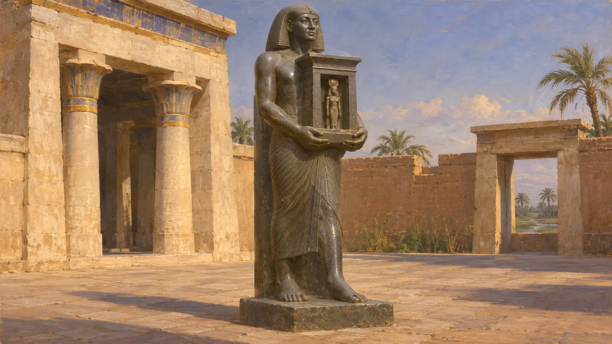
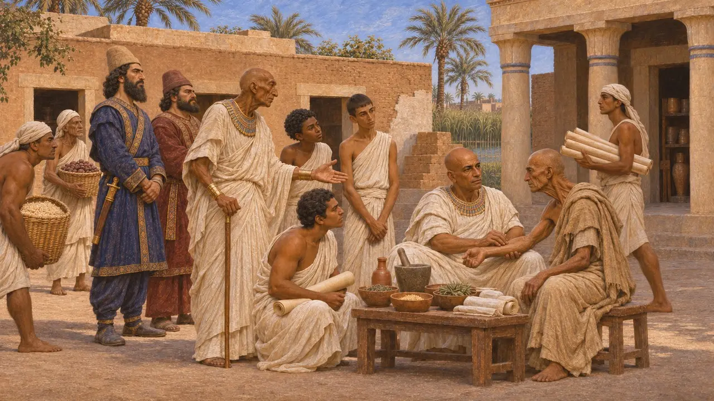
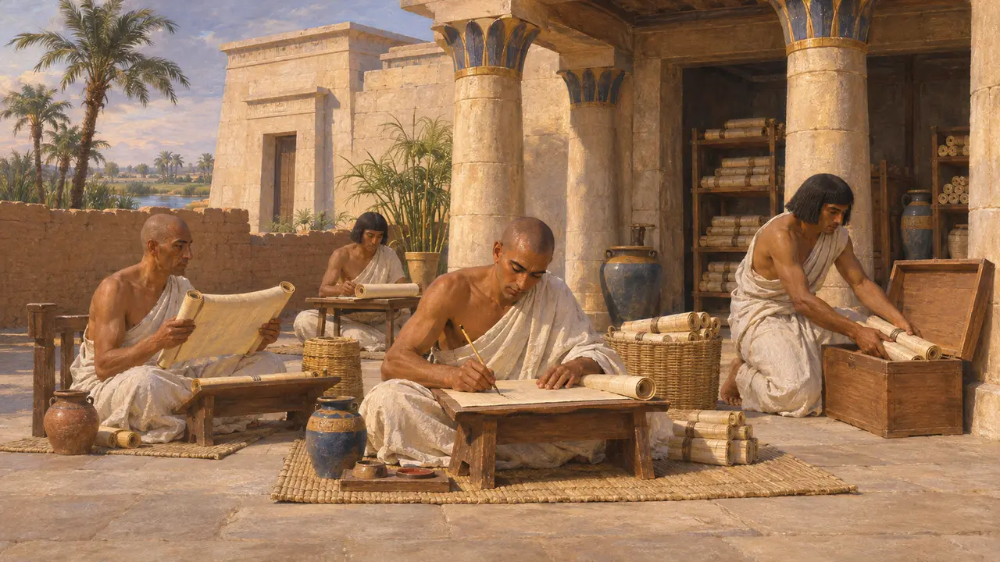
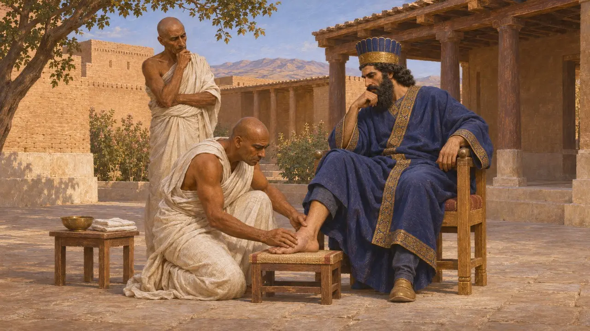
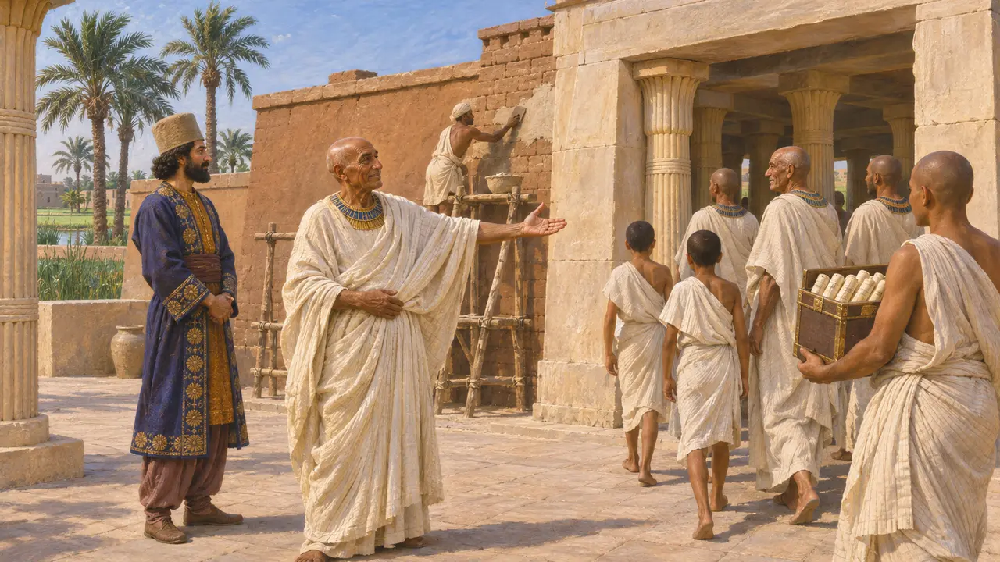

بازسازی خانهٔ زندگی در سائیس به دست داریوش
فرمان شاهی برای احیای خانهٔ زندگی، احتمالاً در سائیس مصر، حدود 519-518 پ.م.
در بازی: مرحلهٔ ۵: منشور
در آغاز پادشاهیاش، داریوش به اوجاهورسنه، کارگزار مصری، فرمان داد دربار پارسی را ترک کند و خانهٔ زندگی را که احتمالاً همان خانهٔ سائیس بود و نهادی معبدی برای نوشتار مقدس و پزشکی به شمار میرفت و رو به ویرانی نهاده بود، بازسازی کند. این فرمان تقریباً یکسره از تندیس کتیبهدار خود اوجاهورسنه شناخته میشود که نشان میدهد شاهان پارسی برای فرمانروایی بر مصر چگونه با بزرگان معبدی مصر همکاری میکردند.
در بازی: بازی این را فرمانی در 518 پ.م. نشان میدهد که اوجاهورسنه را به خانه میفرستد. تندیس سالی نمیدهد، پس 518 پ.م. برآوردی نوین است، و «خانهٔ زندگی» بیش از آنکه صرفاً مدرسه باشد، کتابتخانهٔ معبد برای دانش مقدس بود.

تندیس و نوشتهٔ آن
در اسناداوجاهورسنه در روزگار واپسین شاهان سایسی، آماسیس و پسامتیک سوم، فرمانده نیروی دریایی بود. پس از آنکه کمبوجیه در 525 پ.م. مصر را گشود، او پزشک ارشد و همنشین دربار شد و نام تاجگذاری مصری شاه را او پرداخت. زندگیاش با خط هیروگلیف بر تندیسی کنده شده است که نیایشگاهی کوچک در دست دارد. این تندیس اکنون در موزههای واتیکان است و احتمالاً در روزگار روم به ایتالیا آورده شده است.
Naophorous statue of Udjahorresnet, Vatican Museums

فرمان داریوش
در اسنادکتیبه میگوید داریوش، هنگامی که در عیلام بود، به اوجاهورسنه فرمان داد به مصر برود و خانهٔ زندگی را پس از فرسودگی بازسازی کند. بیگانگان او را از سرزمینی به سرزمین دیگر همراهی کردند. او میگوید آن را با دانشجویانی از خانوادههای سرشناس پر کرد، آنان را زیر نظر دانایان گذاشت و همهٔ نیازهایشان را فراهم ساخت. میافزاید که شاه چنین کرد زیرا ارزش این هنر را برای زنده نگه داشتن بیماران میدانست.
Naophorous statue of Udjahorresnet; A. Kuhrt, The Persian Empire, 2007

خانهٔ زندگی چه بود
در اسنادمتون مصری از دورههای گوناگون از «خانهٔ زندگی» یاد میکنند، نهادی وابسته به معابد که کاتبان در آن کتابهای مقدس دربارهٔ آیین، پزشکی و جادو را رونویسی میکردند، میآموختند و نگه میداشتند. این نهاد بیشتر کارگاه دانش مکتوب بود تا مدرسه به معنای امروزی. تندیس نام شهر را نمیآورد، اما پژوهشگران معمولاً آن را سایس میدانند، در کنار معبد نیت، که اوجاهورسنه پیشتر کمبوجیه را به پاسداری از آیینش واداشته بود.
Naophorous statue of Udjahorresnet; A. H. Gardiner, "The House of Life", Journal of Egyptian Archaeology 24, 1938

پزشکان مصری در دربار پارسی
روایت باستانیهرودوت میگوید آمازیس به درخواست شاه یک چشمپزشک مصری را نزد کوروش فرستاد. او همچنین میگوید داریوش در دربار خود پزشکان مصری نگاه میداشت که بهترین پزشکان شمرده میشدند، هرچند در درمان پیچخوردگی مچ پای او ناکام ماندند تا آنکه دموکدس یونانی آن را درمان کرد. حقیقتِ جزئیات هرچه باشد، روایتهای او با ادعای تندیس مبنی بر ارج نهادن داریوش به پزشکی مصری سازگار است.
Herodotus 3.1; Herodotus 3.129-132

همدست، میهنپرست یا هر دو
مورد مناقشهمورخان در خوانش اوجاهورسنه همداستان نیستند. برخی در او همکاری را میبینند که خدمت خود به فاتحان را توجیه میکند؛ برخی دیگر بزرگی محلی را که تا توانست از معبد و شهر خود پاسداری کرد. تصویر او از کمبوجیه که الهه نیت را ارج مینهد با کمبوجیهٔ بیحرمت هرودوت در تضاد است. پژوهشگران همچنین دربارهٔ تاریخ آن فرمان، که معمولاً 519 پ.م. یا 518 پ.م. دانسته میشود، و اینکه آشوب بزرگ مورد اشارهٔ او فتح سال 525 پ.م. است یا شورشهای سال 522 پ.م.، بحث میکنند.
A. B. Lloyd, "The Inscription of Udjahorresnet: A Collaborator's Testament", JEA 68, 1982; P. Briant, From Cyrus to Alexander, 2002
منابع
- Naophorous statue of Udjahorresnet, Vatican Museums
- A. Kuhrt, The Persian Empire: A Corpus of Sources from the Achaemenid Period, 2007
- A. B. Lloyd, "The Inscription of Udjahorresnet: A Collaborator's Testament", Journal of Egyptian Archaeology 68, 1982
- G. Posener, La première domination perse en Égypte, 1936
- A. H. Gardiner, "The House of Life", Journal of Egyptian Archaeology 24, 1938
- P. Briant, From Cyrus to Alexander, 2002